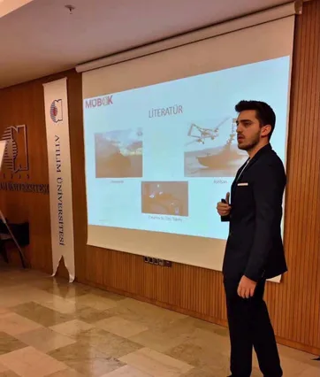

Mühendislik portföyü · Rev. Eki 2026 ENTR
Remzi EfeDemir
Otonom araçları uçtan uca geliştiren mekatronik mühendisliği öğrencisi: CAD'de gövde tasarımı, özgün PCB'lerde güç ve uçuş elektroniği, kontrol yazılımı. 17 kişilik sürü İHA ekibinin kaptanlığını yaptı; şimdi biri HAVELSAN ve AFAD onaylı iki otonom drone projesini yönetiyor.
Yüksek Otonomili Keşif Drone'u
Yüksek otonomiye sahip bir keşif drone'u. Teknik detaylar gizlidir.
Ne
Yüksek otonomili keşif drone'u.
Nasıl
Detaylar gizlidir.
Sonuç
Proje HAVELSAN ve AFAD tarafından onaylandı; geliştirme sürüyor.
Otonom Takip ve Hareketli Platforma İniş Yapan İHA
Hedefi kendi başına takip eden, hareket hâlindeki bir platformdan kalkıp yine ona iniş yapan drone.
Ne
Otonom hedef takibi ve hareketli platforma otonom kalkış-iniş.
Nasıl
Sürü İHA'da ekip içinde edinilen uçuş donanımı ve kontrol deneyimi üzerine kuruluyor.
Sonuç
Devam ediyor. Kilometre taşlarına ulaşıldıkça sonuçlar ve uçuş videoları buraya eklenecek.
GPS'siz Ortamlar için Sürü İHA
Uydu konumlamanın olmadığı kapalı alanlarda formasyon uçuşu yapan düşük maliyetli drone sürüsü.
Ne
- GPS'siz kapalı ortamlarda otonom sürü operasyonu.
- Uydu konumlaması olmadan, düşük birim maliyetle formasyon uçuşu.
- Üreterek öğrenmek için kendi bütçesiyle 17 kişilik ekip olarak başladı.
Nasıl
- SolidWorks'te tasarlanıp 3D basılan modüler gövde.
- Altium Designer'da tasarlanan, güç dağıtımlı uçuş kontrol taşıyıcı kartı.
- RF telemetrili ve CRC kontrollü paketlerle çalışan el kumandası PCB'si.
- Hazır uçuş kontrolcüsü yerine ESP32 üzerinde kendi PID uçuş kontrol algoritmamız.
Sonuç
- TEKNOFEST Sürü İHA'da ön tasarım raporu ve video aşamaları geçildi.
- Atılım Üniversitesi ön kuluçka merkezinde desteklendi.
- TÜBİTAK 2209-B kabul aldı (2025 – devam): konsept, denizde çevresel veri toplamak için otonom kalkış-iniş yapan tek drona uyarlandı.


ROKETSAN KOZ Faydalı Yük Entegrasyonu
Dört bacaklı robotun görev yükü taşımasını sağlayan entegrasyon sistemi.
Ne
ROKETSAN KOZ dört bacaklı platformuna faydalı yük entegrasyonu.
Nasıl
- SolidWorks ile CAD tasarımı.
- Tasarımın MIL-STD standartlarına uygunluğu kontrol edildi.
- Robot köpek platformlarında faydalı yük donanım entegrasyonu; NACA tabanlı kanat profili tasarımı.
Sonuç
Entegrasyon başarıyla tamamlandı.

Otonom Su Altı Aracı (AUV)
Anomali tespiti ve keşif için su altı aracı.
Ne
Su altında anomali tespit eden ve keşif yapan bir AUV. Ekibe üye olarak katıldı, 3 ay içinde elektronik takım lideri oldu.
Nasıl
- Güç elektroniği, özel devreler ve batarya sistemi.
- PCB tasarımı, sensör entegrasyonu ve haberleşme altyapısının yönetimi.
- Kalman filtreli IMU testleri; PID yönelim kontrolü.
- OpenCV ve YOLOv5 ile anomali tespiti.
Sonuç
Mekanik, elektronik ve yazılım entegrasyonuyla çalışan bir araca dönüştürüldü. MÜBAK'25 bildirisinde ortak yazar; aracı MÜBAK'26'da sundu.


İnsansız Deniz Aracı (İDA)
Üzerinde kamikaze İHA taşıyan su üstü platformu.
Ne
Güvertesinde kamikaze İHA taşıyan ve onlarla RF üzerinden bağlantıda kalan bir İDA.
Nasıl
- Altium Designer'da elektronik sistem mimarisi ve şemaları.
- Üzerinde taşınan kamikaze İHA'larla RF haberleşme hattı.
- SolidWorks ile CAD.
Sonuç
Mekanik üretim ve elektronik kablaj tamamlandı. MÜBAK'25'te “İnsansız Deniz ve Hava Araçları ile Entegre Sistemiyle Otonom Arama-Kurtarma” başlığıyla sunuldu.




Deneyim
40 W flyback anahtarlamalı güç kaynağını uçtan uca tasarladı: dönüştürücü tasarımı, LTspice simülasyonu, Altium'da şema ve PCB. Sıradaki aşama prototip testleri.
Savunma sanayii kablaj üreticisi. İş emrinden sevkiyata IFS ERP üzerinde üretim planlama; üretim sahası SOP'leri.
ROKETSAN KOZ faydalı yük entegrasyonu; MIL-STD-810, MIL-STD-498.
Ankara Üniversitesi'nde birincilik alan disotonomi takip cihazı bitirme projesinde I2C, SPI ve UART ile sensör verisi toplama.
Yetkinlikler
- Elektronik
- Altium DesignerPCB tasarımıSMPS / FlybackLTspiceBMS tasarımıRF haberleşmeI2C · SPI · UART
- Gömülü
- STM32ESP32ArduinoRaspberry PiNVIDIA JetsonC/C++Linux
- Otonomi ve yazılım
- PID kontrolKalman filtresiROSPythonMATLABPekiştirmeli öğrenmeOpenCVYOLOv5Sürü algoritmaları
- Mekanik
- SolidWorksSiemens NX3D baskı
- Süreç ve standartlar
- MIL-STD-810MIL-STD-498SOPLastenheftIFS ERP
- Diller
- Türkçe (ana dil)İngilizce (B2)Danca (temel)